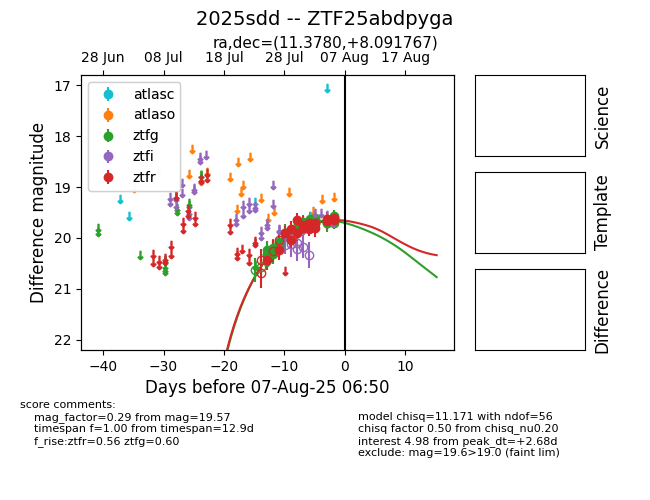

Target 2025sdd at 2025-08-07 07:30, see:
FINK: fink-portal.org/2025sdd
Lasair: lasair-ztf.lsst.ac.uk/objects/2025sdd
ALeRCE: alerce.online/object/2025sdd
TNS: wis-tns.org/object/2025sdd
YSE: ziggy.ucolick.org/yse/transient_detail/2025sdd
alt names
ZTF25abdpyga (ztf,fink)
2025sdd (tns,yse)
coordinates:
equatorial (ra, dec) = (11.3780,+8.09177)
galactic (l, b) = (120.3901,-54.75073)
photometry
last ztfg=19.57, ztfr=19.65
31 ztfg, 17 ztfr detections
